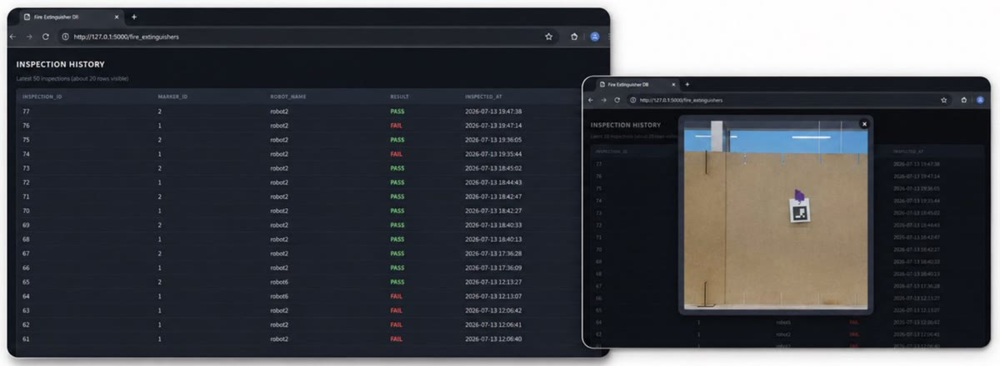
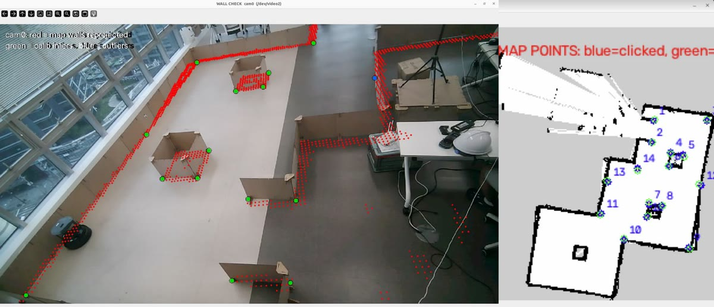
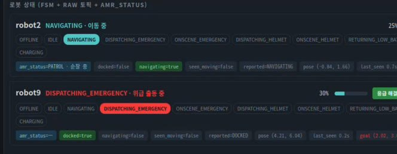
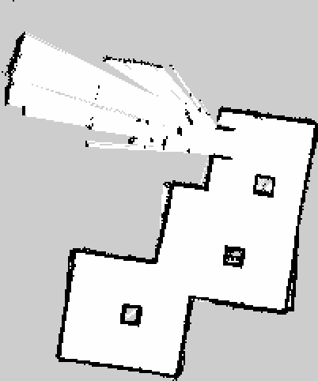

Last modified
한눈에 보기
1분 시연 영상
- 팀은 제조 현장에서 안전사고의 발견과 초동 대응이 늦어지는 문제를 줄이려고, 천장 카메라가 쓰러짐·안전모 미착용을 감지하면 가장 가까운 이동로봇이 출동하고 평소에는 순찰하는 관제 시스템을 개발했습니다.
- 5인 팀의 팀장으로 관제 FSM(로봇별 상태를 관리해 출동을 정하는 로직)과 출동 배정 정책, ROS 2(로봇 프로그램끼리 메시지를 주고받게 하는 미들웨어) 통신을 맡았습니다.
- 26.07.01~26.07.14, 두산로보틱스 ROKEY 부트캠프에서 TurtleBot4 AMR(자율주행 이동로봇) 2대와 천장 웹캠 2대로 진행했습니다.
무엇을 만들었나
천장 카메라와 이동로봇 두 대를 통신으로 묶어, 위험 상황이 생기면 로봇을 보내고 평소에는 순찰하게 하는 공장 안전 시스템입니다.
위험 상황 접수와 가장 가까운 로봇 출동

카메라 감지나 관제 웹 버튼으로 위험 상황이 들어오면, 관제 FSM이 먼저 로봇마다 상태·위치 정보가 들어오는지, 주행 프로그램이 실행 중인지 확인해 출동할 수 없는 로봇을 뺍니다.
저는 남은 로봇 중 사람에게 가장 가까운 로봇에 출동 명령을 보내도록 만들었습니다. 안전모 미착용일 때는 바로 움직일 수 있는 대기 로봇이 있으면 그중 가까운 로봇을 먼저 고릅니다. 쓰러짐(응급)은 안전모 미착용보다 먼저 처리하고, 순찰 중이던 로봇도 순찰을 멈추고 출동합니다. 배터리가 부족해진 로봇은 충전대로 돌려보내고, 그 로봇이 순찰 중이었다면 출동할 수 있는 다른 로봇에 순찰을 넘깁니다.
출동할 수 있는 로봇을 가리는 상태 판단과 메시지 전달 방식은 아래 진행 과정에 적었습니다.
순찰 중 소화기 표식 점검과 기록

팀은 순찰 중 소화기 지점에서 로봇 카메라로 ArUco 마커(카메라가 번호를 읽을 수 있게 만든 흑백 사각 표식)를 찾아, 찾은 마커 번호로 점검 결과와 사진을 데이터베이스에 남기고 웹 화면에서 점검 이력을 조회할 수 있게 했습니다.
위험 상황이 없을 때 로봇은 정해진 지점을 돌며 순찰하고, 마커는 소화기 지점에 도착했을 때만 찾도록 만들었습니다. 이 점검 기능과 출동·순찰을 맡은 로봇 실행 프로그램을 하나로 합치는 일은 남은 과제였습니다.
천장 카메라 화면과 로봇 지도 맞추기

팀은 카메라 화면과 지도에서 같은 지점을 가리키는 점들을 짝지어 호모그래피(영상 평면을 지도 평면으로 옮기는 변환)를 구했습니다. 카메라가 찾은 사람 위치로 로봇을 보내려면 영상 속 위치를 로봇이 쓰는 지도 좌표로 바꿔야 하기 때문입니다.
지도의 벽을 카메라 화면 위에 다시 그려 실제 벽과 겹치는지 눈으로 확인했습니다.
진행 과정
부트캠프가 정한 조건(로봇 간 협업, 감지·AMR 제어, 시스템 모니터) 안에서 팀은 후보 세 개를 두고 논의했습니다. 제가 처음 제안한 공장 화재 감지·순찰 로봇에 팀원의 웹캠 활용 시나리오가 더해져 지금의 주제로 좁혀졌습니다.
출동할 수 있는 로봇 가려내기
저는 로봇이 원래 내보내는 표준 토픽(상태 메시지를 주고받는 채널)이 들어오는지로 로봇별 상태를 관리해, 출동할 수 없는 로봇을 후보에서 빼고 그 이유를 관제 웹에 보이게 했습니다.
가장 가까운 로봇을 보내려면 관제가 지금 어느 로봇이 움직일 수 있는지 알아야 했습니다. 그런데 로봇이 따로 '살아 있다'는 메시지를 보내지는 않았습니다. 그래서 관제에서 배터리·도킹·위치 추정·주행 상태 토픽이 들어오는지를 생존 신호(heartbeat)로 삼았고, 위치 정보가 들어오지 않거나 주행 프로그램이 떠 있지 않은 로봇을 출동 후보에서 뺐습니다.

상태마다 할 조치 — 오프라인이면 전원·네트워크 확인, 위치가 잡히지 않았으면 시작 위치 지정, 주행 기능이 떠 있지 않으면 주행 프로그램 실행 — 는 팀에서 출동 전 확인표로 묶어 함께 썼습니다. 주행 기능이 살아 있는지는 실행 중인 프로그램 목록으로 확인했는데, 통신 설정에 따라 관제 PC가 그 목록을 다 보지 못하면 멀쩡한 로봇도 주행 기능이 없다고 판정해, 출동을 배정하지 않는 문제가 있었습니다. 팀에서는 관제 PC가 전체 목록을 보도록 설정을 고정하고 점검 절차를 문서로 남겼습니다.
그런데 부트캠프 Wi-Fi에서는 정상 순찰 중인 로봇이 오프라인으로 깜빡였습니다. 저는 신호가 끊긴 뒤 오프라인으로 보기까지 기다리는 시간을 늘렸습니다(늘린 뒤 다시 측정하지는 못했습니다).
상태 판정의 기준은 로봇이 실제로 내보내는 신호에 두고, 그 기준이 현장 통신 조건에서 흔들리면 다시 맞춰야 한다는 것을 익혔습니다.
지난 명령 걸러내기(구현은 공동작업)
저는 ROS 2가 제공하는 전달 방식 설정(QoS, 메시지를 어떻게 보내고 남길지 정하는 통신 설정)을 메시지 성격에 맞게 나누는 설계에 직접 관여해, 관제가 보낸 지 오래된 지난 명령은 로봇이 버리도록 했습니다.
관제가 로봇에 보내는 명령은 나중에 켜진 로봇도 마지막 명령을 받도록 남겨 두는 방식이었습니다. 이 경우 로봇이 이미 끝난 상황의 좌표를 받아 엉뚱한 곳으로 출동할 수 있었습니다.
카메라 감지 쪽에서 관제로 넘어오는 메시지 중 상태 정보는 늘 최신값을 유지하고, 사람 위치 좌표는 지난 값을 다시 보내지 않으며, 영상·마커 정보는 일부가 빠지더라도 처리 속도를 우선하게 했습니다. 관제에서 로봇으로 가는 명령은 마지막 값을 남기되 보낸 시각을 함께 실어, 로봇 쪽에서 30초가 지난 명령은 버리게 했습니다.
보낸 시각이 없거나 읽지 못한 명령은 이 방식으로 거르지 못한다는 한계도 남아 있습니다.
지금 동작하는지보다 이 설계가 어떤 조건에서 깨질 수 있는지를 먼저 따져 보는 방식을 익혔습니다.
실물 주행 문제와 통신 분석
저는 실물 로봇이 Nav2(자율주행 소프트웨어)가 만든 장애물 지도에 갇혀 움직이지 못하던 문제를 주행 설정 조정으로 풀었고, 위치 추정·자율주행이 실행 도중 멈추던 문제는 부트캠프 뒤 원인 후보 정리와 비교 실험 계획까지 진행했습니다.
장애물 지도에 갇히는 문제는 실물 로봇에서 나타났습니다. Nav2 설정을 실물 로봇에 맞게 바꾸는 작업 전체는 팀에서 진행했고, 저는 로봇 반경·장애물 주변 여유 거리·지도 갱신 주기 같은 주행 설정을 직접 조정했습니다.

이와 별개로, AMR 관리 PC(노트북)에서 돌리던 위치 추정·Nav2가 실행 도중 멈추는 문제도 있었습니다. 당시에는 네트워크 문제로 대략 진단하고 기존 사례와 다른 통신 구성 해법을 찾아봤지만, 일정 안에 제공 장비의 통신 설정을 바꿔 시험하기는 빠듯해 적용하지 않고 부트캠프 뒤의 분석 과제로 남겼습니다.
부트캠프가 끝난 뒤에는 공식 문서와 유사 장애 사례를 대조해 원인 후보를 정리하고, 로봇 내부 통신과 외부 통신을 나누는 구성을 검토해 통신 방식별 비교 실험 계획까지 세웠습니다. 적용과 실측은 하지 않았습니다.
여러 대의 로봇을 묶는 시스템은 통신 구성부터 같은 조건에서 비교해 봐야 한다는 점을 알게 되었습니다.
팀은 실물 로봇 2대와 천장 웹캠으로 감지·출동·순찰 기능을 개발했지만, 시나리오 전 과정의 실행 결과나 성능은 기록으로 남기지 못했습니다. 로봇의 위치 추정·자율주행이 실행 도중 멈추던 문제는 부트캠프 뒤 원인 후보 정리와 비교 실험 계획까지 마쳤고, 적용과 실측은 하지 않았습니다.
팀에서 일한 방식
역할은 각자의 역량과 흥미를 기준으로 나눴습니다.
- 감지
- 로봇 제어·마커 점검(순찰 중 소화기에 붙인 표식 확인)
- DB(점검 기록 저장)·웹
- 관제와 ROS 2 통신(제 담당)
저는 팀장으로서 각 노드(기능별 실행 프로그램)를 이해하고 FSM으로 잇는 일이 맞다고 보고 관제를 맡았습니다.
강사 평가가 매일같이 잡혀 있어 평가 준비를 위해 수시로 회의했습니다. 평가는 요구사항 발표와, 스프린트(기능별로 나눈 짧은 개발 기간)마다 받는 설계·코드·테스트 리뷰였습니다.
감지 결과와 특정 로봇에 내리는 명령이 섞이지 않도록 토픽을 관찰(사람 위치)·요청(관제 접수)·명령(로봇 이동) 세 단계로 나누는 계약을 팀에서 정했습니다. 로봇 2대를 함께 운용하면서는 팀에서 실행 노드를 띄울 때 로봇 이름을 지정할 수 있게 고쳤습니다.
실기에서 도킹(충전대 복귀) 좌표·대기 시간 같은 값을 바꿀 때마다 프로그램을 띄우는 실행 스크립트를 고쳐야 했습니다. 저는 이 값들을 별도 설정 파일로 빼자고 제안했고, 팀은 코드를 건드리지 않고 설정 파일만 바꿔 다시 실행하는 방식으로 실기 시험에 함께 썼습니다.
중반 이후 Wi-Fi 부하 때문에, 팀은 카메라 감지·관제·웹을 돌리는 비전 PC(관제 PC)와 로봇 두 대의 위치 추정·자율주행 프로그램을 돌리는 AMR 관리 PC를 나눠 운용했습니다. 나눌 때는 AMR 관리 PC 담당에게 실행 절차를 문서로 넘겼습니다.
배운 점
TurtleBot4와 Nav2는 부트캠프 초반 4일간의 실물 미니프로젝트에서 활용법과 하드웨어 구조를 파악한 뒤 예제와 실기로 계속 익혔습니다. 관제 노드를 로봇이 내보내는 표준 토픽을 직접 받아 판단하는 방식으로 짜면서, 상태 판정의 기준은 로봇이 실제로 내보내는 신호에 두되 그 기준이 현장 통신 조건에서 흔들리면 다시 맞춰야 한다는 것을 알게 되었습니다. 메시지 전달 방식을 설계하면서는 지금 동작하는지보다 어떤 조건에서 깨질 수 있는지를 먼저 따져 봐야 한다는 것을, 실물 통신 문제를 분석하면서는 여러 대의 로봇을 묶는 시스템은 통신 구성부터 같은 조건에서 비교해 봐야 한다는 것을 배웠습니다.
기술 상세
관제 FSM·통신 분석 펼쳐 보기
관제 FSM은 로봇 상태 메시지 수신을 heartbeat로 삼아 로봇별 오프라인·대기·출동·충전 상태를 관리하고, 위치 정보나 Nav2 필수 노드가 확인되지 않는 로봇은 출동 후보에서 뺍니다. 카메라 감지 쪽에서 관제로 넘어오는 메시지는 상태 정보·사람 위치 좌표·영상(마커) 세 갈래로 나눴고, 관제에서 로봇으로 가는 명령에는 보낸 시각을 실어 30초가 지난 명령을 로봇 쪽에서 버리게 했습니다.
부트캠프가 끝난 뒤에는 노드끼리 서로를 찾는 과정(Discovery)·통신 품질 설정(QoS)·Wi-Fi 혼잡 등 원인 후보를 정리하고, 로봇 내부 통신과 외부 통신을 나누는 구성(CycloneDDS + Zenoh, 로봇 프로그램 사이의 통신을 맡는 소프트웨어 조합)을 검토했습니다. 적용과 실측은 하지 않았습니다.
참고 문서
팀 발표 자료(세부 기술): 발표 자료(PDF, 58쪽)
코드 근거
Rokey_intelli1 — 팀 최종 코드(README가 코드 구성과 한계를 설명합니다)